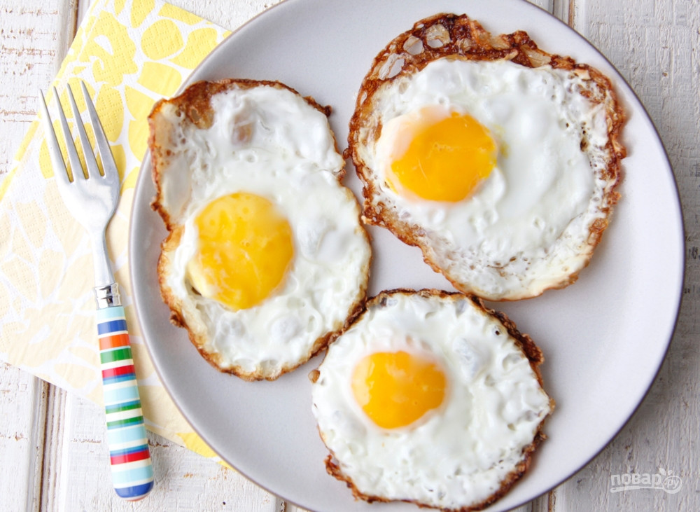

Description
A fried egg is a cooked dish made from one or more eggs which are removed from their shells and placed into a frying pan and fried
Ingredients
Steps
- In a small nonstick over medium heat, crack eggs into pan
- Cook 3 minutes then flip and cook 30 seconds
- Season it with salt